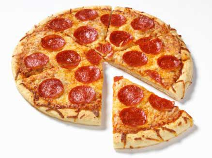

The Codingdojo Pizzeria!
The best slice in the valley!
Question of the month: What is your favorite pizza topping?
Pepperoni
Bacon
Pineapple
About us!
We know that writing code works up an appetite, that's why Codingdojo is proud to announce that we are opening a pizza kitchen inside our mountain view location! Head chef Michael "spumoni" Choi has lots of delicious family recipes to share with our customers! Whether you like flat crust or deep dish so deep you can't cut through it, the Codingdojo pizzeria has something you and all of your friends can agree on. Using only the freshest ingredients the Bay area has to offer, the Codingdojo pie will be sure to debug your hunger!
Thin Crust Pizza
- Small: $10.00
- Medium: $15.00
- Large: $20.00
- Dojo size: $30.00 (feeds 10 ninjas)
- Toppings: $2.00 per small, $2.50 per medium, $2.75 per large, $3.00 per Dojo
Deep dish, 'Dojo style' Pizza
- Small: $12.00
- Medium: $17.00
- Large: $24.00
- Dojo size: $34.00 (feeds 10 ninjas)
- Toppings: $2.00 per small, $2.50 per medium, $2.75 per large, $3.00 per Dojo
